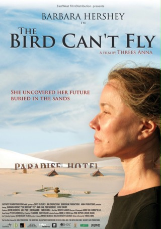

The Bird Can't Fly
In brief
A high-strung chef returns to the decaying South African mining town she left years before and confronts unfamiliar family.
- Directed by
- Threes Anna
- Country
- Netherlands / South Africa / Ireland
- Year
- 2007
- Running time
- 89 minutes
- Festival section
- World Cinema
- Premiere
- North American Premiere
- With
- Barbara Hershey, Yusuf Davids, Tony Kgoroge, John Kani
- Screenings
- Fri Oct 3, 7:15 PM, Sequoia
Thu Oct 9, 4:45 PM, Rafael
Source: Souvenir programme guide (page 45 of the PDF): Wayback Machine copy; Poster from Filmweb